La indecisión es la llave a la
flexibilidad
|
|
||
|
La indecisión es la llave a la
flexibilidad |
|
|
|
********************************************************************************************* Newer news can be found on scotlandnews |
| Macchu Picchu, Peru, May 26, 2005. | ********************************************************************************************* Trekking finished, it was the day for the feature attraction. Everything ahead of Macchu Picchu leads you to think it's not going to live up to the star billing - the hype, the crowds, the National Geographic articles, the expected familiarity before you get there. Wrong again - Macchu Picchu outstrips the expectations. Despite the vehement objections of our tired bones, we hiked up to the ridge in the pre-dawn, and were there banging on the still-locked gates. The ticket booth opened up about 6 AM, for fear of provoking us - we looked fairly fearsome after this previous week and they probably didn't want any trouble. Early morning fog burned off as the sun rose... 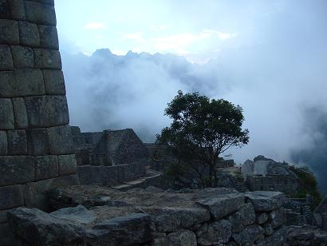 Within half an hour the Kiwis had broken into the Sun Temple to see the sunrise, and for the rest of the day we had our own security detail following us around. After a while we became accustomed to the shrill blast of a security whistle warning us of some other infraction of the rules. Kiwis - trouble every day. Here's the morning moon over the building known as Tres Ventanas (Three Windows). After they gave it that name, they spotted the other two blocked up windows. Nice one lads. 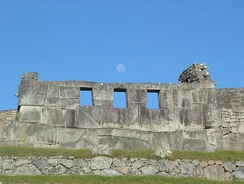 By mid-morning the splendour and beauty had become too much for Jim and long-time travelling companion, Pink. 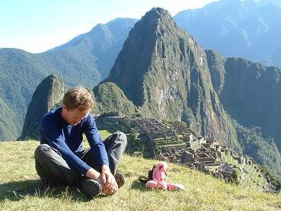 This is the classic shot of Macchu Picchu with the peak of Waynu Picchu in the background. What you might not have seen before is the 'face' of the mountain - rotate the picture anti-clockwise 90 degrees and you'll see it, maybe. 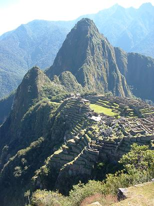 If you can't see it, nevermind, it was funny to think of you all twisting your heads around. Speaking of funny, this is the Sun Rock - a big standing slab of rock that gets the sun all day. Back in the day, it had great significance for the little Inca dudes. 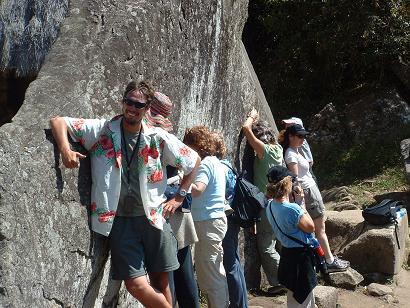 Nowadays, it has deep meaning, man, for hippy chicks of a certain age. James and the rest of us, highly amused, are obviously less in tune with our inner leylines or crystals or something. We climbed to the top of Waynu Picchu for lunch. A nice view always helps the digestion nicely. 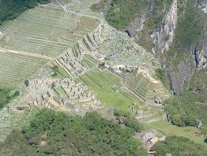 Kiwis and Team Scotland, post-lunch. Back row, left to right: James, Sarah, Warren. Front row, left to right: Caleb, Kirsty, Catherine, Jim, and Ferg's head. Ferg's body had turned into a conical stone. 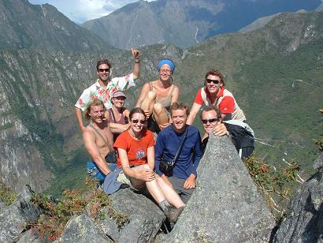 In hiking down the back of Waynu Picchu (pondering the old question: 'Who were these Picchu guys, Wayne and Matthew, anyway?') we found this carved Inca seat on the very edge of the razor ridge. Warren poses, far above the valley floor. Some Inca dude though this would be a good place for a little seat, and carved it out of the rock. The Inca - mad as brushes the lot of them; Warren too. 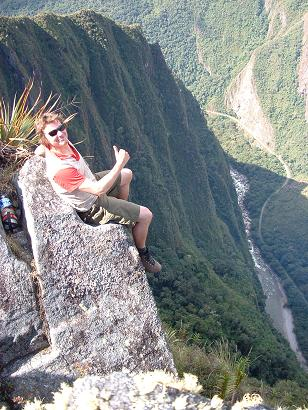 At the Temple of the Moon we found a safer seat for Ferg, now replete with full body. 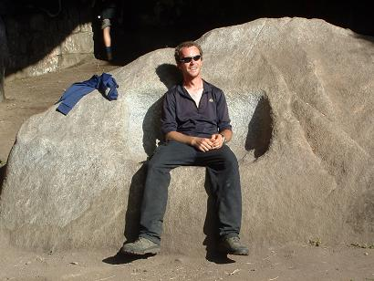 The Temple of the Moon has nothing to do with the moon, of course. It's a natural cave on the back of Waynu Picchu that the Inca have altered to their purposes by building seats and walls within it. What their purpose was in building this place so far removed from the rest of the site is anyone's guess. Our guess is that it was a 'backstage' area, a kind of green room, where the Inca priests would chill and have a beer after worshipping the sun or sacrificing hippies. This seat, at the mouth of the cave, faces directly west and has a great view of the sunset. One can just imagine the priests kicking back here after a hard day worshipping the condor, designing the water drainage system for the terraces, or fighting Spaniards. Continuing our disrespect at the Sun Rock, Catherine is clearly relaxed about standing on the shoulders of Ferg and Jim. 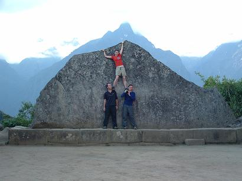 This is one of the many temple areas on the mountain. This is the only place there is any deterioriation in the stonework - here the slope is slipping, giving rise to the gaps between blocks on the right. Everywhere else, you couldn't slide a sheet of paper into the joints. 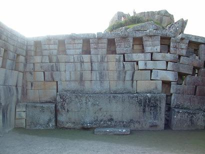 This is the main altar - it is believed to be a rock representation of the surrounding area, probably lined up with the winter solstice. Well, they lined everything else up with the winter solstice, so why not this as well? 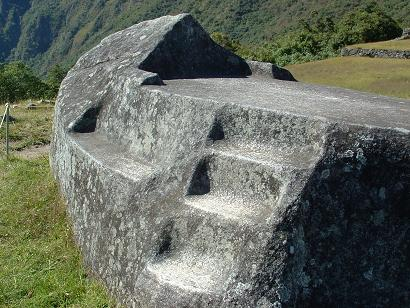 Climbing down from Waynu Picchu was a bit of a mission, particularly for those who had choosen from the 'chemically-assisted' section of the lunch menu. 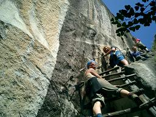 Here are the Kiwis runnng around on the edge. 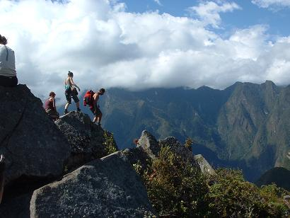 Token arty 'through-a-doorway' photo... 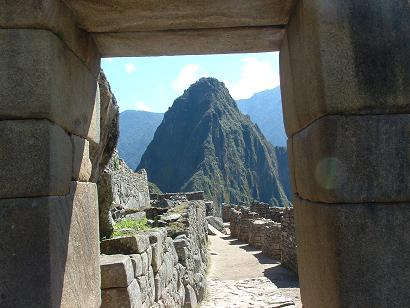 One explanation for the Inca building their main sites atop scary mountains is that they liked the views. You can't argue with them there. 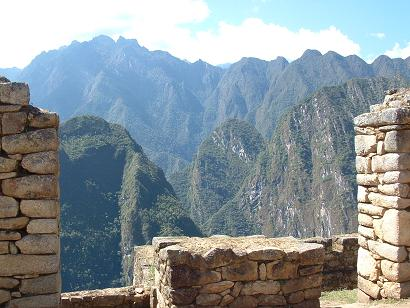 They were also good at building terraces for Ferg to run around on. 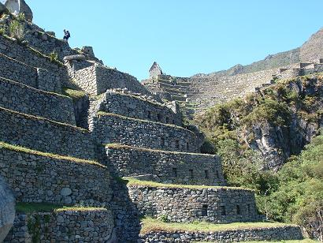 Perfect drainage and still stable all this time later. The terraces, that is, not Ferg. 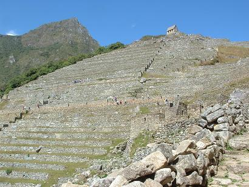 Night falls over Macchu Picchu... time to go home. 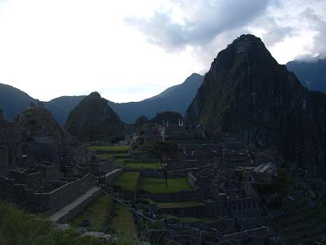 So there you go, yet another guy on the Internet telling you that you have to go to Macchu Picchu. Believe the hype... |
| Macchu Picchu Trek, May 18-26, 2005 (Part Three - Up and Down The Valleys). | ********************************************************************************************* Leaving the Maysal campsite early to get as much hiking done before the sun got high in the sky, the team climbs high through some jungle on another seemingly interminable switchback trail. Altitude sickness was taking its toll when we reached the old Inca silver mine, but we felt that this ridge, while not the highest of the trek, would mark a psychological high point. 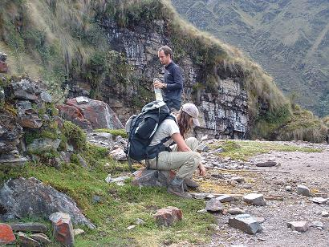 About an hour later, we reached the ridge at 4,200 metres and took a break, with Kiwis Warren and James celebrating with Ferg by standing too close to the drop-off. 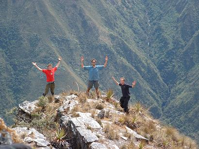 After two days in the Rio Victoria valley, the views of the Rio Yanama valley were as different as if we had crossed to another country. On this side of the ridge the land was more pastoral with several glaciers off to the east. 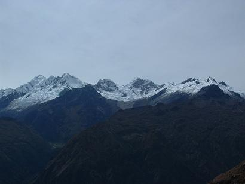 The east was also the direction of that night's campsite - the village of Yanama. Yanama, a welcome downhill stroll of only 700 metres descent, was also an opportunity to replenish our dwindling food and chocolate supplies. We camped just beyond the village to give us a good start for the following day, which would be the highest, but a relatively simple jaunt. 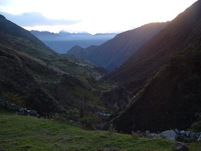 The first few hours of the next day were on a gentle uphill climbing up to the head of the valley. Catherine sets a blurring early pace... 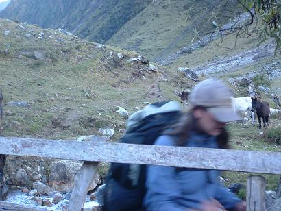 Our target for the day was the village of Totora, which was over the pass at the head of the valley and an equivalent distance down the other side. Every day it seemed that we were either climbing up and then down, or down and then up. Depressingly on this morning all the villagers heading in the same direction as us to the market in Totora were racing past us. You know those old dears in the bowler hats? Fast on the old pins, I tell you. Our pace slackened as we approached the highest point of our trek - the 4,600 metre pass to Totora seemed to jack up suddenly at the top of the valley. Our route was to the left of the glacier. 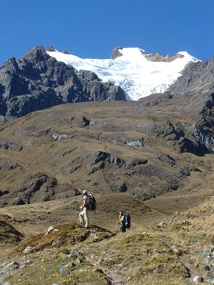 This is the view from the pass... 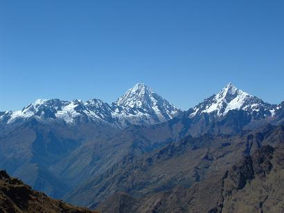 That night we pitched tent in Totora's plaza, and provided an evening's amusement for the locals. This next photo neatly summarises the trek: spectacular scenery of soaring peaks, glacier-topped, defying description; exhausted bone-weary team cooking up some more Pasta Surprise. At least that's the way I remember it. 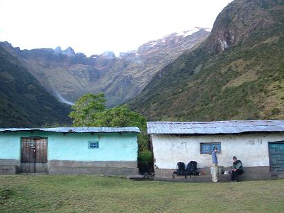 The next day was the final 'proper' walking day. We hiked downhill for about six hours (imagine our joy, of walking ever-downwards in the river valley all day). The only photo of the entire day is this one: the destination town of Playa. 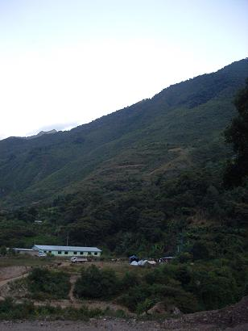 'Playa' means beach, so we relaxed with some cervezas and a swim in the bracing waters of the Santa Teresa river. Oh no, wait, there's another photo from Playa: 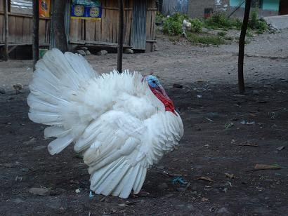 The next day we rode in the back of a truck to the town of Santa Teresa, before crossing the river in the local style... 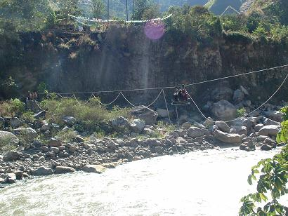 Then a truck to the train station at Planta Electrica; Simon would have loved this one - a hydroelectric station pumping a massive torrent of water out of the side of a mountain. We hiked the train track to the town of Agua Calientes, never realising that Macchu Picchu was directly above us on the ridge and we were walking around three sides of it. We didn't have time to wait for the train, as we needed to find out what was going on in Istanbul... 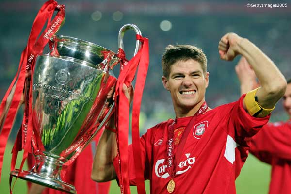 A good day for Scotland'04+1 and a good day for Liverpool Football Club. Onwards to Macchu Picchu... |
| Macchu Picchu Trek, May 18-26, 2005 (Part Two - Over The Mountains). | ********************************************************************************************* On leaving Choquequirao, exhausted after a two-day hike, nobody was quite confident in our ability to complete the remaining five days. The first half of that day's hike was a steep descent to the valley of the Rio Victoria, on the way passing several unrestored Inca ruins. At the river we had a foot- and sock-washing ceremony. Then we had some chocolate... 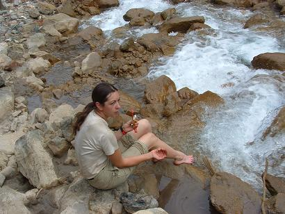 With supplies of chocolate running low, Jim took it upon himself to ration out the chocolate. Catherine and Ferg were not best pleased with this, and Jim was lucky not be be sacrificed to the Inca gods. The second half of that day was taken up with climbing out the other side of the valley, regaining the 1,200 metres of height lost in the morning. This is the view looking back at where we had been. 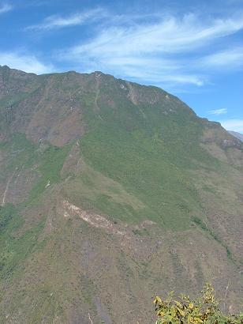 The team camped that night at Maysal, but not before managing to buy four eggs for the breakfast. Check out that campsite, oh the glamour of it all. Pink Panther chose to stay outside. 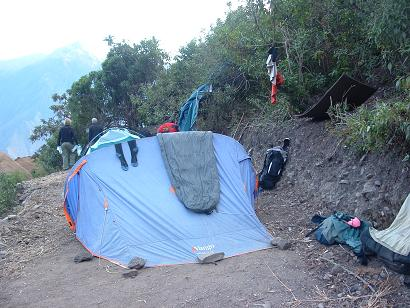 Grinning through the pain; smiling through the cold, Ferg rustles up another delicious pot of Pasta Surprise, to be washed down with a swig of purified water, with a hint of chlorine tablet. 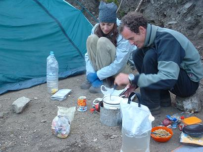 Every evening was an early-to-bed evening, but we always mananged to stay up for moonrise. Worth it every time. 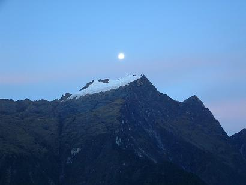 |
| Macchu Picchu Trek, May 18-26, 2005 (Part One - Choquequirao). | ********************************************************************************** *********** Trekking to Macchu Picchu was easily the toughest trek any of us had undertaken. We didn't do the Inca Trail on the advice of loads of people horrified by the extreme wussiness of it all. We plotted our own course across the mountains, and carried our own gear, unlike the wussy New Zealanders and their fancy-schmancy mules. From the village of Cachora outside Cusco, one day's hiking took us to the Rio Apurimac. This is low water - some of those canyons look mighty fine and runnable (from a thousand metres up, anyway). 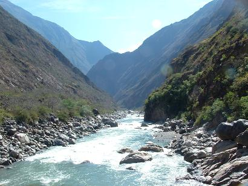 With one of the team almost suffering sunstroke on the 1,200 metre descent into the river valley, and with an equal height ascent facing us up the other side, there was a small discussion on turning back. We sat out the heat of midday and then pressed onwards and upwards. 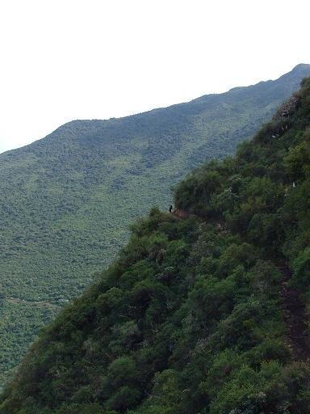 Early on the second day we reached Choquequirao, one of the many lost cities of the Inca. Yes, yes, I know we've been banging on about the Inca for some time now, but at least it's not trains or churches, so bear with me. Anyway this segment is about hiking to Macchu Picchu, so what were you expecting? 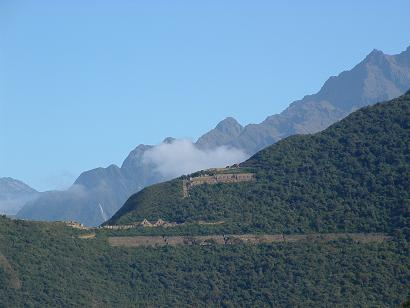 Choquequirao is fairly remote, and the Spanish never found it, apparently. It is believed to have been a ceremonial site or the country retreat for some high-ranking Inca. Talk about getting away from it all. The day we were there, we saw about 10 other tourists and two guys who work there. 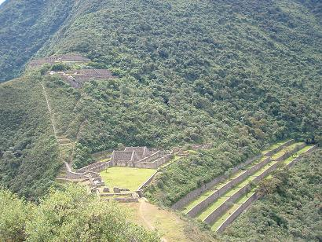 The terraces are believed to extend down the hillside for about 500 metres. This is Kiwi Caleb climbing an ancient wall. Descended from deported criminals, all those Kiwis. 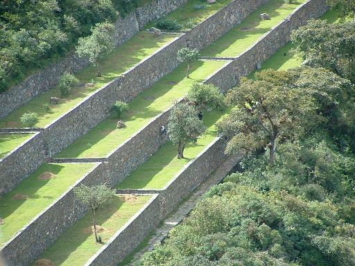 Doorways with double recesses like the one on the right of this picture indicate that some important Inca stuff went on within. 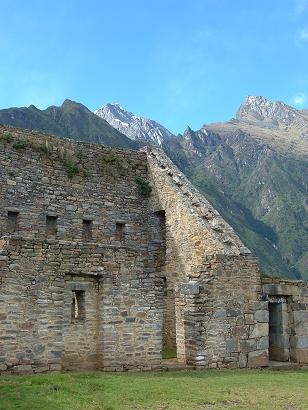 The team had some important stuff of its own to carry out that night. Ferg's cast was subject to some amateur surgery with a river knife. 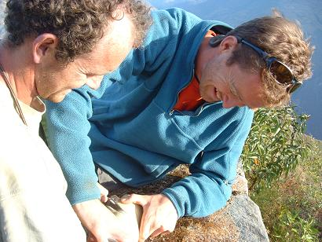 After eight weeks wearing a cast, Ferg's right arm had lost half its beefiness and most of its tan. Next week - brain surgery. What could possibly go wrong? 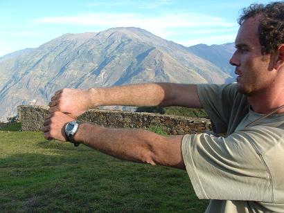 Choquequirao was a fantastic trek in its own right, but for us it was just the start. There were many more tough walking days ahead with steep ascents and descents. We watched the sun set beyond the Apurimac, now 1,500 metres below, and pitched tent. It was quite a surreal experience wandering around the place in the near-full moon, knowing there was nobody else in the entire site. |